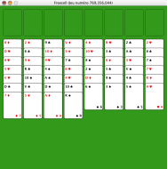

Aide de Freecell
Aide de Freecell
Qu'est-ce que Freecell?
Freecell est une réussite (jeu de cartes
à un seul joueur) dont presque chaque partie peut être gagnée
si vous êtes suffisamment habile. L'aire de jeu est composée
de quatre emplacements vides (en haut à gauche), de quatre piles (en
haut à droite) et de huit colonnes (en bas).
 Les cartes
sont mélangées, puis réparties sur les huit colonnes.
Votre but est de déplacer toutes les cartes des colonnes vers les
quatre piles. Chaque pile est constituée de cartes de même
nature (pique, cœur, carreau, trèfle). Les piles doivent
être formées de cartes de même nature, dans l'ordre
usuel des cartes, en commencant par les as, les deux, trois, etc.
Les cartes peuvent être
déplacées d'une colonne à une autre en suivant les
règles suivantes. Une carte peut seulement être
déplacée sur une carte dont la valeur est plus
élevée d'une unité et de couleur différente.
Par exemple, vous pouvez mettre un cinq de cœur (rouge) sur un six de
trèfle (noir).
Finalement, les cartes peuvent être
placées ou retirées des quatres emplacements vides situés dans le haut à
gauche. Chaque emplacement ne peut contenir qu'une seule carte à la
fois. Les colonnes vides peuvent être utilisées de la même
façon que les cases vides.